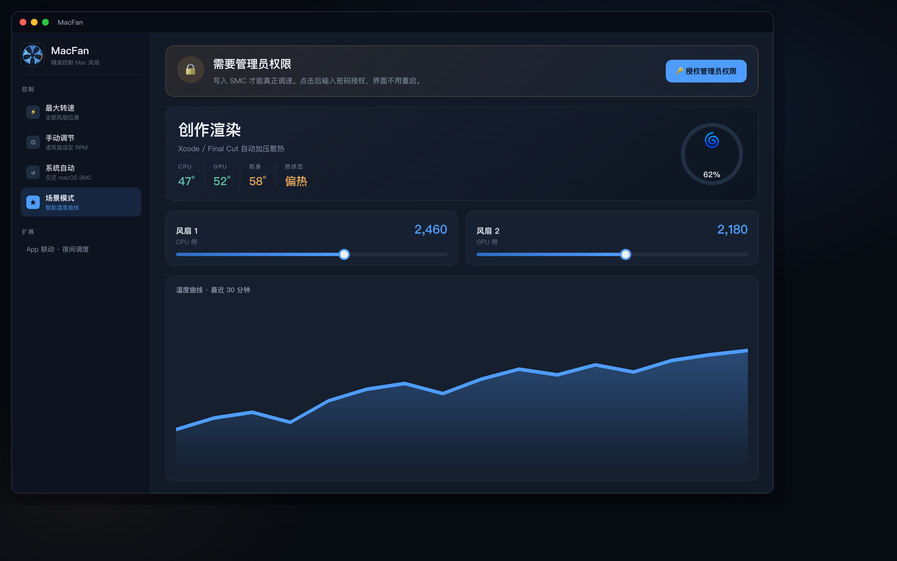
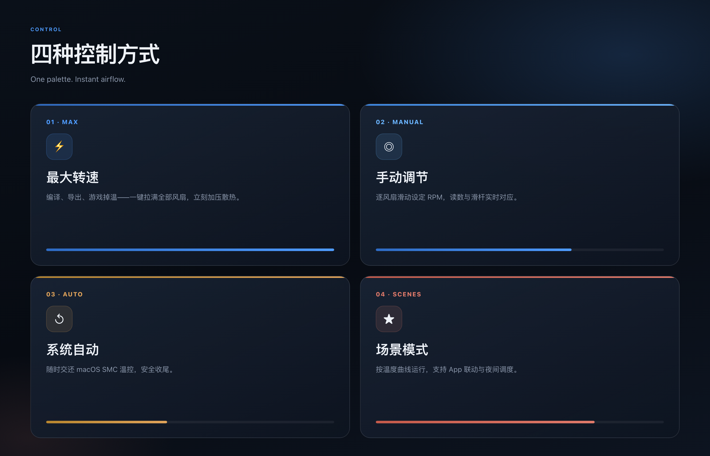
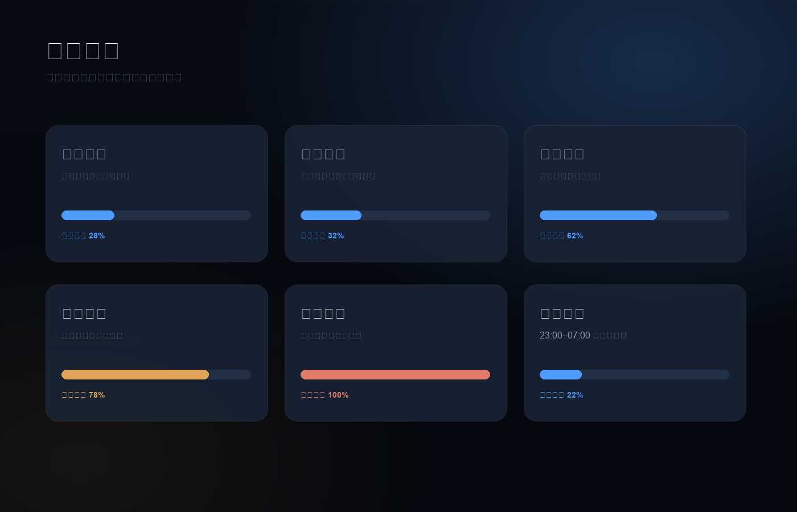

最大转速
一键拉满全部风扇，编译、导出、游戏掉温时立刻加压。
v1.1 · macOS · Intel & Apple Silicon
精准控制每一寸气流。最大转速、单风扇手调，以及会跟着你工作方式变化的智能场景。
Signal Night 全新配色 · 菜单栏更快识别 · 一键授权实控

为官网与发布页准备的界面海报，展示控制方式与场景引擎。


不是一堆开关，而是四种控制方式与一套可扩展的场景引擎。
一键拉满全部风扇，编译、导出、游戏掉温时立刻加压。
逐风扇滑动设定目标 RPM，读数与滑杆实时对应。
随时把温控交还 macOS SMC，安全收尾。
按温度曲线运行，并可联动 App 与夜间时段。
从静音办公到极速散热，覆盖你一天里最常见的热负载。
Universal Binary，同一套界面与场景引擎同时服务 Apple Silicon 与 Intel。底层按芯片映射风扇键值，菜单栏与程序坞图标一并就绪。
克隆仓库，用 Xcode 运行；实控风扇时授权管理员权限。
git clone https://github.com/linux503/MacFan.git
cd MacFan
open MacFan.xcodeprojXcode 选择 My Mac，⌘R。首次可先体验界面与场景逻辑。
在 App 内点击「授权管理员权限」，输入密码后即可写入 SMC 真正调速。
长时间手动控温后，请切回「系统自动」。Apple Silicon（尤其 M3/M4）可能受 thermalmonitord 约束，MacFan 已内置解锁流程。